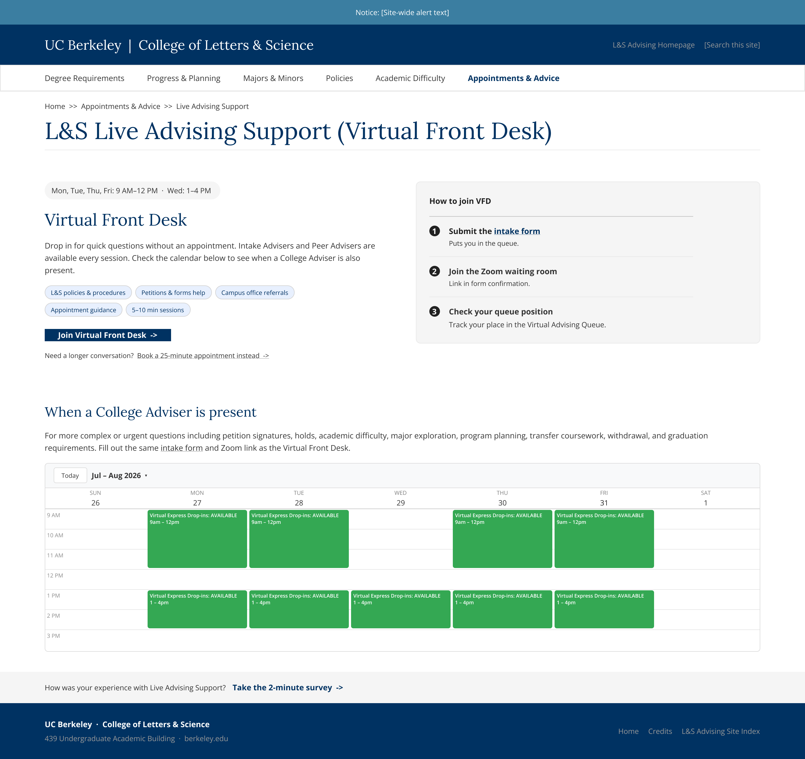
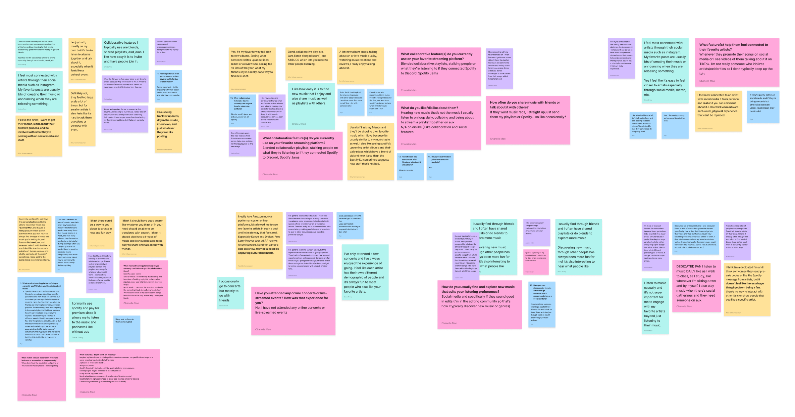

Student Information System

Placeholder — one-sentence hook describing what this project was and why it mattered.
Role
Design Intern
Platform
OmniUpdate (OB)
Scope
3 pages
VFD · A&A · F&P
Skills
UX Research
Information Architecture
Prototyping
01 — The Problem
Placeholder — hook + one stat
Placeholder — what was broken for students? Lead with the hook, then anchor it with a single compelling stat.
02 — Role & Constraints
Intern. OmniUpdate. Three pages. Eight weeks.
Placeholder — what was the scope of your work? What constraints shaped the design decisions you made?
03 — What the Research Told Me
Four themes from an affinity map, GA4, and a live site audit
Placeholder — walk through your research methods and what each one surfaced. What were the four themes?
Synthesis. We affinity mapped 100+ user responses into categories to decide on a direction.

04 — The Insight That Changed My Direction
Situation-first, not category-first
Placeholder — describe the pivot moment. What did you learn that reframed how you approached the architecture?
05 — Three Pages, One System
VFD, A&A, and F&P — built on a shared design language
Placeholder — how did you create cohesion across three distinct pages? What patterns, components, or principles carried through?
Design system / shared components
06 — Designing A&A: Testing Three Hypotheses
Two concepts explored, one cut — and why
Placeholder — walk through concepts 1 and 2. What were the hypotheses behind each? Why did Design 3 get cut?
A&A concepts 1 & 2
07 — Designing Forms & Petitions: A Bet on Search
Two concepts, one rationale for leading with search
Placeholder — describe the two concepts and the reasoning behind betting on search as the primary navigation pattern.
F&P concepts
08 — How I Used AI as a Design Tool
Placeholder — what role did AI play in your process?
Placeholder — describe how you used AI in your design workflow. Was it for research synthesis, copy, ideation, prototyping? What worked and what didn't?
09 — Usability Testing Plan
What I'm watching for — and why
Placeholder — what are you testing, with whom, and what specific behaviors or signals are you looking for? What would success look like?
10 — What I'd Do Next
Placeholder — if you had more time
Placeholder — what would you build, test, or revisit with another sprint? What open questions are still on the table?